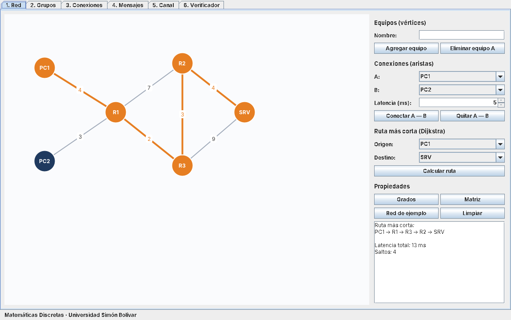

Módulo 1 · Grafos
Red: la ruta más corta
13 ms
PC1 → R1 → R3 → R2 → SRV
- Equipos como vértices y enlaces como aristas con latencia
- Grados, matriz de adyacencia y conexidad (BFS)
- Algoritmo de Dijkstra con la ruta resaltada
Clases: Grafo, Nodo, Arista, Dijkstra, PanelRed, LienzoGrafo
